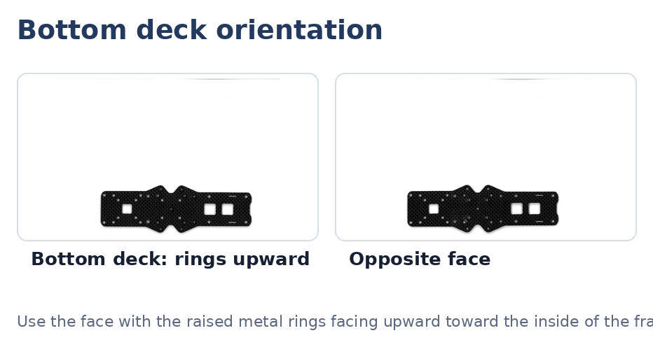
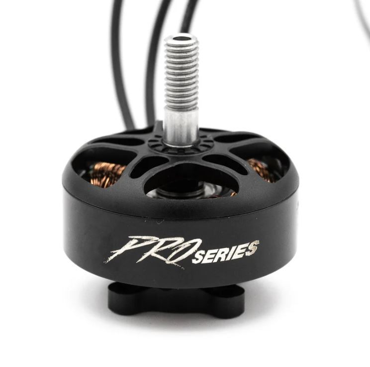

Task 5: Install the motors
Confirm the lower frame orientation, then mount all four motors using the short motor screws.
Day 3Blocked until Task 4 is complete
Task 5: Install the motors
Confirm the lower frame orientation, then mount all four motors using the short motor screws.
Blockers
This task depends on the lower frame being fully assembled.
Not marked complete
Parts required
- Lower frame from Task 4
- Four EMAX Pro Series 2808 motors
- Motor hardware bags from the motor kits
Tools required
- 2.5 mm Allen key
Step 1. Confirm which side of the lower frame is up
- Place the assembled lower frame on the bench and positively identify the top and bottom before installing any motors.
- The bottom plate must be on the bottom.
- The side of the lower deck with the metal protrusions must face upward.
- If the frame does not match those conditions, stop and correct the lower frame orientation before proceeding.
STOP! Do not install a motor until the lower frame orientation is confirmed.

Use this reference to confirm that the lower deck metal protrusions face upward.
Step 2. Identify the correct motor screws
- Open one motor package at a time and keep that motor’s hardware with it until you have identified the correct screws.
- Find the two black screw bags. One contains 8 mm screws and one contains 10 mm screws.
- Use the 8 mm screws for mounting the motors.
- Set the 10 mm screws aside so they are not accidentally used.

Each motor kit includes both 8 mm and 10 mm screws. Use only the short 8 mm screws for mounting.
Step 3. Mount all four motors
- Place one motor on the end of an arm and align the mounting holes.
- Route the motor wires straight along the arm, not off to the side.
- Install all four screws by hand before tightening any of them.
- Repeat for the remaining three motors.
- After all four screws on a motor have started, snug them in a crisscross pattern with the 2.5 mm Allen key.
- Collect the propeller nuts included with the motors and store them in the propeller bag so they are not lost.

Keep the motor wires aligned with the arm.

EMAX Pro Series 2808 motor.
Common errors
- Installing motors before confirming which side of the lower frame is up.
- Using the long 10 mm motor screws instead of the short 8 mm screws.
- Tightening one screw fully before the other three have started.
- Routing the wires off the side of the arm.
- Losing the propeller nuts that ship with the motors.